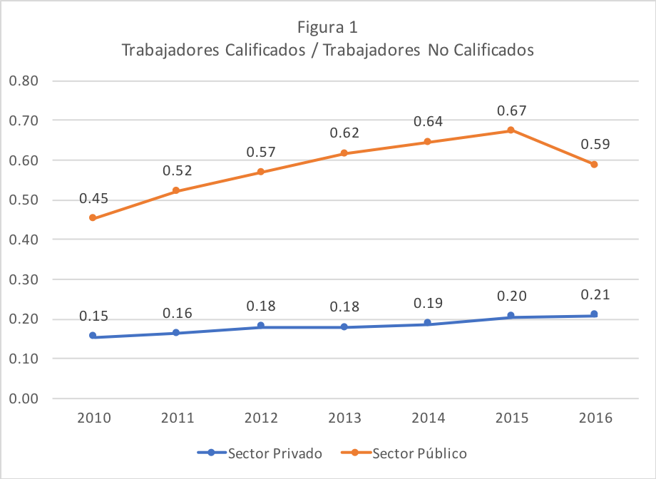
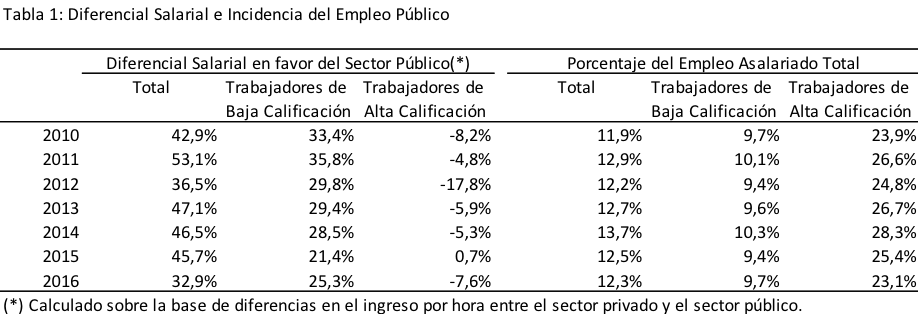

Hacia una gestión eficiente en el sector público
Publicado en la Revista Observatorio Económico de la Facultad de Economía y Negocios de la Universidad Alberto Hurtado
El sector público es uno de los principales empleadores del mercado laboral en el mundo. Chile no es la excepción. Considerando los últimos datos de la Nueva Encuesta Suplementaria de Ingresos disponibles para 2016 (ver Tabla 1), más de un 12% de los hombres ocupados asalariados en edad adulta trabajan en el sector público. Este porcentaje sube a más del 20% si se consideran trabajadores que tiene educación superior o más. Es destacable también que la incidencia del empleo público se ha mantenido relativamente constante en los últimos años. Por otro lado, los salarios promedio del sector público en 2016, para el mismo grupo de trabajadores considerado antes, fueron 33% superiores a los del sector privado asalariado. Más aún, trabajadores sin educación superior ganaban en promedio 25% más en el sector público mientras que los trabajadores con al menos educación terciaria ganaban cerca de 8% menos en comparación con el sector privado. Llama la atención que los diferenciales salariales en favor del sector público eran todavía más abultados en años anteriores.
En un proyecto de investigación en el que estamos trabajando,1 estimamos la productividad del trabajo en los sectores público y privado, para asalariados hombres en edad adulta y para los dos grupos según nivel educativo considerados. Si bien los datos de las encuestas de hogares y empleo no permiten conocer la distribución de los trabajadores del sector público por tipo de contrato, ellos resultan útiles para caracterizar al empleo en este sector. La Figura 1 presenta información sobre la composición del empleo por nivel educativo en ambos sectores. Los datos muestran una mejor composición del empleo por nivel educativo en el sector público que en el privado en todos los años considerados. En efecto, mientras 37% de los trabajadores del sector público tienen un nivel educativo alto, en el sector privado 17% de los trabajadores son de alta calificación.
También encontramos, al igual que en otros estudios para Chile, que existe un premio por trabajar en el sector público (mayor para los trabajadores de alto nivel educativo) y que dichos trabajos tienden a ser mucho más estables que los del sector privado. En efecto, la duración promedio estimada de los trabajos en los sectores público y privado es de 46 y 22 meses, respectivamente.
Por su parte, las estimaciones de productividad arrojan resultados llamativos. En el grupo de alta calificación, encontramos que los trabajadores en el sector privado son en promedio 37% más productivos que en el sector público. Estas diferencias de productividad en favor del sector privado son incluso mayores al considerar sólo al grupo de trabajadores de menor nivel educativo. Aquí surgen varias preguntas: ¿cómo se interpretan esas diferencias de productividad? ¿Qué podría explicar la baja productividad del sector público? ¿Qué hacer y qué se ha hecho para aumentar la productividad del sector público en Chile y cuáles han sido los resultados?
En términos generales, se puede entender a la productividad como el valor de la producción de los bienes y servicios de la economía, en relación a los insumos utilizados para obtenerlos. Así, la productividad del trabajo representa el valor de lo que produce en promedio cada trabajador. Para poder medirla es necesario en primer lugar, poder valorar la producción. Esta tarea es fácil en el sector privado, en donde se producen bienes y servicios que se venden a distintos precios en los mercados. El problema es cómo valorar los bienes y servicios que produce el sector público, que en su mayoría son bastante diferentes en sus características a los producidos por el sector privado.
Por un lado, el sector público produce bienes que complementan la producción del sector privado (como en el caso de caso de la educación y la salud en Chile) y, por el otro, el sector público produce bienes y servicios que no son o no pueden ser provistos por el sector privado, como por ejemplo la justicia, el registro civil, las prisiones, la defensa nacional, los cuerpos diplomáticos, etc. En estos casos es difícil, por ejemplo, conocer el valor de los servicios de justicia que nos otorga el Estado, ya que no existe un mercado de justicia que nos permita obtener información de los precios. En términos generales, las actividades del sector público son multidimensionales e intrínsecamente difíciles de valorar, lo que hace compleja la medición de la productividad..
En nuestro estudio adoptamos una estrategia indirecta de identificación, a partir de la información disponible de salarios y de argumentos teóricos sobre cómo se determinan los mismos, para estimar la productividad de los trabajadores en ambos sectores. Los resultados indican que, en términos esperados, si comparamos dos trabajadores de idéntica calificación trabajando en distintos sectores, el empleado en el sector privado será más productivo que el que se desempeña en el sector público.
Una sociedad asigna sus recursos de manera eficiente si produce lo que desea con la menor cantidad de insumos posible. Se podría argumentar que las tecnologías de producción de los sectores público y privado son bien distintas y que la observación que el sector público es menos productivo que el privado no implica que el Estado sea ineficiente. Sin embargo, el hecho de no poder medir fácilmente lo que producen las instituciones públicas, y de que no exista la “disciplina” que impone el mercado, podría explicar la falta los incentivos adecuados para que el Estado produzca los bienes y servicios que la sociedad le demanda de manera eficiente.
Ante esto, desde la década de los noventa en muchos países desarrollados se vienen implementando esquemas de incentivos en el sector público. No obstante, el contar con esquemas de pagos por incentivos adecuados en el sector público es sumamente difícil. Raramente es posible vincular los contratos de trabajo al esfuerzo y el desempeño. También es difícil restringir la intromisión y la arbitrariedad del poder político en la gestión de las instituciones. Si bien la definición de metas podría contribuir a alinear objetivos, un desafío no menor es que las metas representen adecuadamente la productividad de las agencias públicas. Esto es mucho más sencillo en el sector privado, donde el objetivo es maximizar ganancias. El sector público produce bienes y servicios que no siempre tienen valores de referencia fácilmente identificables. En este contexto, un sistema de incentivos para una repartición pública basado en metas, puede generar efectos no deseados si los indicadores considerados no reflejan adecuadamente el “valor” que genera esa agencia pública para la sociedad. Esta agencia puede terminar alterando su misión de servir a la sociedad en múltiples dimensiones por el cumplimiento de metas predefinidas a partir de esos indicadores. Por ejemplo, suponga que el personal de Carabineros provee sólo los servicios de seguridad y control de tránsito, pero que existe un premio por cada multa por infracciones a esta ley. Esto puede ser un buen incentivo para aumentar los controles de tránsito, pero al mismo tiempo un incentivo a descuidar la prevención del delito. Otro problema es que en muchas agencias la producción resulta de esfuerzos grupales y por lo tanto los incentivos debieran también ser grupales, en lugar de individuales. Esto hace también que existan trabajadores con incentivos a sub-esforzarse sabiendo que sus compañeros de trabajo harán el esfuerzo necesario para alcanzar las metas.
Ante esto, es fundamental una definición adecuada de estándares de desempeño, para que los sistemas de incentivos generen los efectos deseados en la productividad del sector público. En Chile existen tres grandes mecanismos de incentivos: un incentivo individual al Alto Directivo Público, un incentivo colectivo (convenios de desempeño colectivo de 8% de la remuneración base anual) y un incentivo institucional, entre los que se destaca el Programa de Mejoramiento de la Gestión (PMG, de hasta 7,6%) como el de mayor prevalencia. Este programa, vigente desde fines de los noventa, es de carácter grupal y está asociado al desempeño en gestión de los grupos de trabajo participantes. Las metas son definidas por los propios equipos con el asesoramiento de técnicos especializados, y la evaluación del cumplimiento de metas es realizada por terceros. Pueden calificar al programa trabajadores de planta y a contrata. Hacia 2015 el PMG alcanzaba 127 instituciones y casi 100 mil empleados públicos. Los otros programas de incentivos abarcan 41 instituciones más. En total, estos sistemas se aplicaron en el 83% de las instituciones a las que se les asignaron recursos en la Ley de Presupuesto de ese año2.
Resulta llamativo que el 98% de las reparticiones alcanzaron a cumplir con las metas del PMG 2015 y los años anteriores. A la luz de los últimos comentarios, cabe preguntarse en qué medida las metas que se definieron representan de manera adecuada la productividad con la que se desea que el sector público gestione los recursos que la sociedad le transfiere con sus impuestos. A modo de ejemplo, el Sistema de Acceso a la Información Pública utiliza como indicador de calidad de atención a los usuarios el “% de solicitudes de acceso a la información pública respondidos en hasta 15 días hábiles en el año”. Ciertamente, responder una solicitud diciendo que los datos no están disponibles, como comúnmente es la experiencia de muchos que piden información por transparencia, se puede hacer en mucho menos de 15 días hábiles y eso no necesariamente se relaciona con la calidad de la atención recibida.
En líneas generales, las metas del PMG parecen ser fáciles de cumplir y reflejan sólo parcialmente la productividad de las instituciones participantes. Adicionalmente, más allá de su cumplimiento, el componente variable de las remuneraciones del sector público asociado directamente al desempeño individual en gestión sigue siendo bajo. En cambio, existe una gran cantidad de asignaciones que se suman al sueldo base pero que no necesariamente tienen que ver con la eficiencia en la gestión. En definitiva, queda mucho por hacer para perfeccionar los sistemas de incentivos en el sector público.

